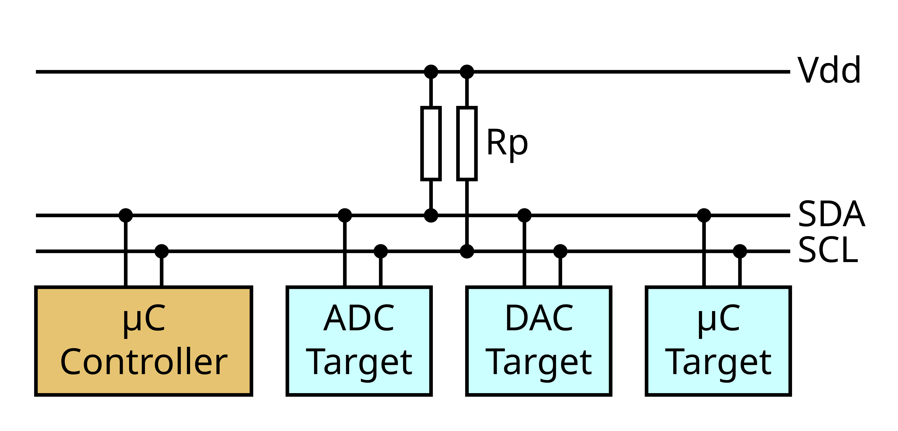
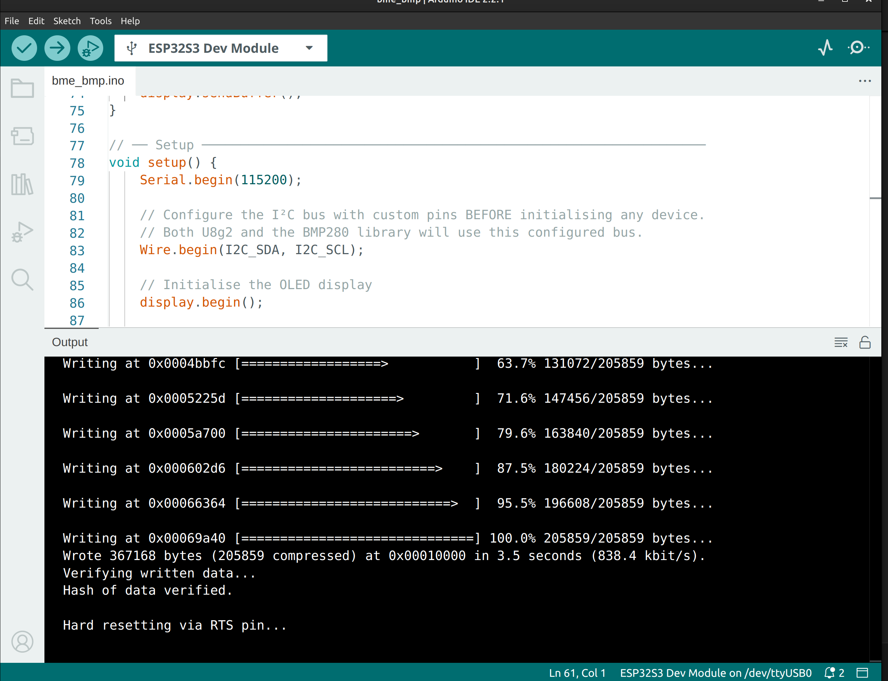
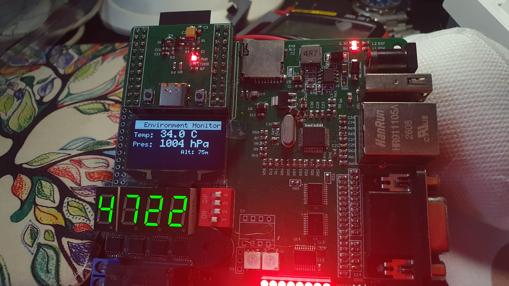

Project 10 : Environmental Monitoring with BMP280 and OLED Display#
Introduction#
In this project, you will read temperature, humidity, and barometric pressure from a BMP280 environmental sensor and display the live readings on the on-board SH1106 OLED screen. Both devices share the same two-wire I²C bus, demonstrating one of I²C’s most useful properties: multiple devices can communicate over a single pair of wires, each identified by its own address.
By the end of this tutorial, you will know how to:
Understand how multiple I²C devices share a single bus using unique addresses.
Initialise a shared I²C bus with custom pins using the ESP32’s
TwoWireAPI.Read temperature, humidity, and barometric pressure from the BMP280.
Display multi-line sensor data on the SH1106 OLED using U8g2.
Build a periodically-refreshing dashboard that updates readings every second.
Requirements#
Before starting, make sure you have the following:
The STEAM development kit or The STEAM standalone microcontroller board
USB cable
Arduino IDE with ESP32 toolchain installed
The BMP280 sensor and the SH1106 OLED display are both integrated on the STEAM development board and share the same I²C bus. No external components or additional wiring are needed.

The interfacing description of the microcontroller board#
I²C bus pin assignments (shared by both devices):
Signal |
ESP32-S3 GPIO |
Connected to |
|---|---|---|
SCL |
IO48 |
SH1106 OLED clock + BMP280 clock |
SDA |
IO47 |
SH1106 OLED data + BMP280 data |
I²C device addresses:
Device |
Address |
Notes |
|---|---|---|
SH1106 OLED |
|
Fixed on the STEAM board |
BMP280 |
|
SDO pin tied to GND on the STEAM board |
Background: Key Concepts#
The I²C Bus and Device Addressing#
I²C (Inter-Integrated Circuit) is a two-wire serial protocol that allows many devices to share a single pair of lines: SCL (clock) and SDA (data). The ESP32-S3 acts as the bus master — it generates the clock and initiates all transactions. Each peripheral is a slave and responds only when addressed by its unique 7-bit address.
A transaction begins with the master sending a start condition and a 7-bit address. Every slave on the bus reads that address; the one that recognises it responds with an acknowledgement. All other slaves stay silent. This addressing scheme is how two completely different devices — a display controller and an environmental sensor — can peacefully coexist on the same two wires.

Multiple I²C devices sharing SCL and SDA lines#
Note
No two devices may share the same address on the same bus. The SH1106 is at 0x3C and the BMP280 is at 0x76 — they are different, so both work on the same wires without conflict.
The BMP280 Sensor#
The BMP280 is a compact environmental sensor from Bosch that measures three quantities in a single small package:
Measurement |
Unit |
Typical range |
|---|---|---|
Temperature |
°C |
−40 to +85 °C (±1 °C) |
Relative Humidity |
% RH |
0 to 100 % (±3 %) |
Barometric Pressure |
hPa |
300 to 1100 hPa (±1 hPa) |
The sensor also provides a calculated altitude estimate derived from the pressure reading by comparing it against a configurable sea-level reference pressure (standard atmosphere = 1013.25 hPa).
Note
Because the BMP280 is mounted on the PCB near other components that generate a small amount of heat, its temperature reading may read 2–5 °C higher than the true ambient temperature. This is normal and is called self-heating or thermal offset. The Experiment section shows how to apply a calibration correction.
Required Libraries#
Install both libraries through the Arduino Library Manager (Tools → Manage Libraries):
Library |
Search term in Library Manager |
|---|---|
U8g2 |
|
Adafruit BMP280 Library |
|
Adafruit Unified Sensor |
|
Note
The Adafruit BMP280 Library depends on the Adafruit Unified Sensor library. The Library Manager will prompt you to install the dependency automatically when you install the BMP280 library — accept this prompt.
Writing the Program#
Create a new sketch in the Arduino IDE and enter the following code:
#include <Wire.h>
#include <U8g2lib.h>
#include <Adafruit_Sensor.h>
#include <Adafruit_BMP280.h>
// ── I²C pin definitions (shared by OLED and BMP280) ──────────────────────
#define I2C_SCL 48
#define I2C_SDA 47
// ── Device I²C addresses ──────────────────────────────────────────────────
#define OLED_ADDRESS 0x3C
#define bmp_ADDRESS 0x77 // Change to 0x77 if your board uses that address
// ── Sea-level pressure reference for altitude calculation ─────────────────
#define SEALEVEL_HPA 1013.25
// ── Temperature self-heating correction (°C to subtract) ─────────────────
// The BMP280 sits near other components that generate heat.
// Measure the true ambient temperature with a reference thermometer,
// subtract the BMP280 reading, and enter the difference here.
#define TEMP_OFFSET 0.0 // e.g. set to 3.0 if BMP280 reads 3°C too high
// ── Display: SH1106 128×64, full buffer, hardware I²C ────────────────────
// When passing a Wire pointer explicitly, use the SW constructor with
// U8X8_PIN_NONE for all pins; pin configuration comes from Wire.begin().
// U8G2_SH1106_128X64_NONAME_F_HW_I2C display(
// U8G2_R0, // No rotation
// U8X8_PIN_NONE, // No hardware reset pin
// I2C_SCL, // SCL — IO48
// I2C_SDA // SDA — IO47
// );
U8G2_SH1106_128X64_NONAME_F_HW_I2C display(U8G2_R0, /* reset=*/ U8X8_PIN_NONE);
// ── BMP280 sensor object ──────────────────────────────────────────────────
Adafruit_BMP280 bmp;
// ── Update interval ───────────────────────────────────────────────────────
#define UPDATE_INTERVAL_MS 1000
unsigned long lastUpdate = 0;
// ── Helper: draw the sensor dashboard ────────────────────────────────────
void drawDashboard(float tempC, float pressure, float altitude) {
char buf[24];
display.clearBuffer();
// ── Header bar ────────────────────────────────────────────────────────
display.setDrawColor(1);
display.drawBox(0, 0, 128, 13);
display.setDrawColor(0);
display.setFont(u8g2_font_6x10_tr);
display.drawStr(14, 10, "Environment Monitor");
display.setDrawColor(1);
// ── Temperature ───────────────────────────────────────────────────────
display.setFont(u8g2_font_6x10_tr);
display.drawStr(0, 25, "Temp:");
display.setFont(u8g2_font_profont17_tr); // Slightly larger for the value
snprintf(buf, sizeof(buf), "%.1f C", tempC);
display.drawStr(40, 25, buf);
// ── Pressure ──────────────────────────────────────────────────────────
display.setFont(u8g2_font_6x10_tr);
display.drawStr(0, 39, "Pres:");
display.setFont(u8g2_font_profont17_tr);
snprintf(buf, sizeof(buf), "%.0f hPa", pressure);
display.drawStr(40, 39, buf);
// ── Altitude (small, bottom-right) ───────────────────────────────────
display.setFont(u8g2_font_5x7_tr);
snprintf(buf, sizeof(buf), "Alt: %.0fm", altitude);
display.drawStr(72, 49, buf);
display.sendBuffer();
}
// ── Setup ─────────────────────────────────────────────────────────────────
void setup() {
Serial.begin(115200);
// Configure the I²C bus with custom pins BEFORE initialising any device.
// Both U8g2 and the BMP280 library will use this configured bus.
Wire.begin(I2C_SDA, I2C_SCL);
// Initialise the OLED display
display.begin();
// Show a startup message while the BMP280 initialises
display.clearBuffer();
display.setFont(u8g2_font_6x10_tr);
display.drawStr(10, 28, "STEAM Dev Board");
display.drawStr(10, 42, "Finding BMP280...");
display.sendBuffer();
bmp = Adafruit_BMP280(&Wire);
// Initialise the BMP280, passing the configured Wire instance
if (!bmp.begin()) {
// Sensor not found — show error and halt
display.clearBuffer();
display.setFont(u8g2_font_6x10_tr);
display.drawStr(0, 20, "BMP280 not found!");
display.drawStr(0, 34, "Check address:");
display.drawStr(0, 48, "Try 0x76 or 0x77");
display.sendBuffer();
Serial.println("ERROR: BMP280 not found. Check I2C address and wiring.");
while (true) { delay(1000); }
}
Serial.println("BMP280 initialised successfully.");
Serial.print("Sensor chip ID: 0x");
Serial.println(bmp.sensorID(), HEX); // 0x60 = BMP280, 0x56-0x58 = BMP280
delay(500); // Brief pause so the startup message is visible
}
// ── Loop ──────────────────────────────────────────────────────────────────
void loop() {
unsigned long now = millis();
if (now - lastUpdate >= UPDATE_INTERVAL_MS) {
lastUpdate = now;
// Read sensor values
float tempC = bmp.readTemperature() - TEMP_OFFSET;
float pressure = bmp.readPressure() / 100.0F; // Pa → hPa
float altitude = bmp.readAltitude(SEALEVEL_HPA);
// Update display
drawDashboard(tempC, pressure, altitude);
// Echo to Serial Monitor for debugging
Serial.printf("Temp: %.1f°C Pres: %.1f hPa Alt: %.0fm\n",
tempC, pressure, altitude);
}
}
Uploading the Program#
Connect the board to your computer using the USB cable.
Select ESP32S3 Dev Module from Tools → Board → esp32.
Select the correct serial port from Tools → Port.
Click the Upload button and wait for completion.
Open the Serial Monitor (Tools → Serial Monitor, 115200 baud) to see readings echoed as text.

Expected Result#
After uploading:
The OLED briefly shows “STEAM Dev Board / Finding BMP280…” during initialisation.
The display then switches to the environmental dashboard, showing:
Temp: live temperature in °C
Humi: relative humidity in %
Pres: barometric pressure in hPa
Alt: estimated altitude in metres (small text, bottom-right)
All four values refresh every 1 second.
Breathing on the sensor causes humidity to rise and then slowly return to ambient — a satisfying way to confirm the sensor is live.
The Serial Monitor shows the same readings as a comma-separated line every second.
If the OLED shows “BMP280 not found!”, see the Troubleshooting section.

How the Code Works#
Shared I²C Bus Initialisation
The single most important line in setup() is:
Wire.begin(I2C_SDA, I2C_SCL);
This configures the ESP32-S3’s hardware I²C controller to use IO47 (SDA) and IO48 (SCL) instead of the ESP32 defaults. It must be called before any library that uses I²C, so that both U8g2 and the BMP280 library inherit the correct pin assignment.
U8g2 takes the pin numbers directly in its constructor. The Adafruit BMP280 library takes a pointer to a TwoWire object in its begin() call:
BMP.begin(BMP_ADDRESS, &Wire);
Passing &Wire (the address of the global Wire object) tells the library to use the same bus instance that was already configured — not to create its own. This is the key to sharing a bus cleanly between two libraries.
Reading the BMP280
The Adafruit library exposes four simple read functions:
Function |
Returns |
|---|---|
|
Temperature in °C ( |
|
Relative humidity in % RH ( |
|
Pressure in Pascals (divide by 100 for hPa) |
|
Estimated altitude in metres ( |
The pressure unit mismatch is the most common beginner mistake — the library returns Pascals (Pa), but weather data is always reported in hectopascals (hPa). Dividing by 100.0 converts between them.
Non-Blocking Timing
The loop() function uses millis() instead of delay() to measure the update interval:
if (now - lastUpdate >= UPDATE_INTERVAL_MS) {
lastUpdate = now;
// ... read and display
}
This pattern means the MCU is never stalled waiting. Other code (additional sensors, button handling, communication tasks) can be inserted into loop() without interfering with the 1-second update rhythm.
Displaying Multiple Fonts in One Frame
U8g2 allows the active font to be switched at any point within a frame by calling display.setFont() again. In drawDashboard(), the label (e.g. “Temp:”) uses a compact 6×10-pixel font, while the numeric value uses a slightly taller profont17 font — giving the values visual prominence without requiring a complete layout redesign.
All drawing calls after clearBuffer() build up in RAM. Only sendBuffer() transfers the complete frame to the display in one I²C transaction, eliminating any visible flicker.
Sensor Chip ID Check
After a successful BMP.begin(), the code reads and prints BMP.sensorID() to the Serial Monitor. This is useful for distinguishing genuine BMP280 modules (chip ID 0x60) from BMP280 modules (chip IDs 0x56 to 0x58) that are sometimes sold mislabelled. A BMP280 lacks the humidity sensor, so humidity readings will return NaN.
I²C Scanner Sketch#
If you are unsure of the I²C address of any device on the bus, upload this utility sketch first to identify everything connected. It is standalone — remove it before uploading the main program.
#include <Wire.h>
#define I2C_SDA 47
#define I2C_SCL 48
void setup() {
Serial.begin(115200);
Wire.begin(I2C_SDA, I2C_SCL);
Serial.println("I2C Scanner — scanning addresses 1 to 126...");
uint8_t found = 0;
for (uint8_t addr = 1; addr < 127; addr++) {
Wire.beginTransmission(addr);
if (Wire.endTransmission() == 0) {
Serial.printf(" Device found at 0x%02X\n", addr);
found++;
}
}
if (found == 0) Serial.println(" No devices found. Check wiring.");
else Serial.printf("Done. %d device(s) found.\n", found);
}
void loop() {}
Expected output with the STEAM board:
I2C Scanner — scanning addresses 1 to 126...
Device found at 0x3C ← SH1106 OLED
Device found at 0x76 ← BMP280
Done. 2 device(s) found.
If you see only one address or none, check the wiring and power supply before proceeding.
Experiment#
Try the following modifications to deepen your understanding.
Apply a temperature self-heating correction. Place the board in the same environment as a reference thermometer for 10 minutes. Note the difference between the reference reading and the BMP280 reading, then set
TEMP_OFFSETin the code:#define TEMP_OFFSET 3.5 // BMP280 was reading 3.5°C too high
This correction is subtracted from every temperature reading automatically, and it also improves the humidity reading because the BMP280 derives relative humidity from absolute humidity relative to temperature.
Add a dew point calculation. Dew point is the temperature at which moisture condenses, useful for HVAC and agriculture:
// Magnus formula approximation (accurate to ±0.35°C between 0–60°C) float dewPoint(float tempC, float rh) { float a = 17.625f, b = 243.04f; float gamma = log(rh / 100.0f) + (a * tempC) / (b + tempC); return (b * gamma) / (a - gamma); }
Display the result on the OLED by replacing the altitude line, or add it as a fifth row if you switch to a smaller font.
Add a simple trend indicator. Compare the current pressure reading to the reading from 30 seconds ago and display an arrow to indicate whether pressure is rising (
>), falling (<), or stable (=):static float prevPressure = 0; float delta = pressure - prevPressure; char trend = (delta > 0.3) ? '>' : (delta < -0.3) ? '<' : '='; prevPressure = pressure;
A rapidly falling pressure often indicates approaching bad weather — a classic barometer function.
Change the update interval. Modify
UPDATE_INTERVAL_MSto5000for a 5-second refresh, or500for twice-per-second updates. Note that reading the BMP280 more than once per second has no benefit since its internal measurement cycle runs at approximately 1 Hz in default mode.Display temperature in Fahrenheit alongside Celsius:
float tempF = tempC * 9.0f / 5.0f + 32.0f; snprintf(buf, sizeof(buf), "%.1fC / %.1fF", tempC, tempF);
Troubleshooting#
Symptom |
What to check |
|---|---|
OLED shows “BMP280 not found!” |
Run the I²C scanner sketch (see above). If the BMP280 appears at |
I²C scanner finds no devices |
Confirm the board is powered. Verify that |
Humidity always reads NaN or 0 |
The sensor may be a BMP280, not a BMP280. Check |
Temperature reads several degrees too high |
Expected due to PCB self-heating. Set |
OLED is blank but BMP280 appears in the I²C scanner |
The OLED address may differ. Try changing |
Readings are constant and do not change |
Confirm the board is not in a sealed enclosure with no airflow. Breathing gently on the sensor should cause humidity to rise within a few seconds. |
Pressure reads an implausible value (e.g. 0 or very large) |
Ensure the pressure is divided by 100 before display (Pa → hPa). Double-check that |
Summary#
In this tutorial, you learned how to read environmental data from a BMP280 sensor and display it on an SH1106 OLED — both connected to the ESP32-S3 on the same I²C bus using a shared pair of wires.
Key concepts covered include:
How I²C device addressing allows multiple peripherals to share two wires without conflict.
Configuring custom I²C pins with
Wire.begin(SDA, SCL)and sharing the configured bus between multiple libraries by passing&Wire.Initialising the Adafruit BMP280 library with a custom
TwoWirereference.Reading temperature, humidity, pressure, and derived altitude from the BMP280.
Converting sensor units correctly (Pa → hPa).
Building a non-blocking update loop with
millis()for periodic refresh without stalling the MCU.Rendering a multi-font dashboard with U8g2, using
clearBuffer()andsendBuffer()for flicker-free updates.Using the I²C scanner as a first-step diagnostic tool whenever a device is not found.
Understanding and compensating for BMP280 self-heating on an integrated board.
This project introduces the foundational pattern for multi-sensor embedded systems: a shared bus, independent device addresses, timed polling, and a rendered display — a combination that appears in weather stations, air-quality monitors, HVAC controllers, and countless IoT data-logging applications.